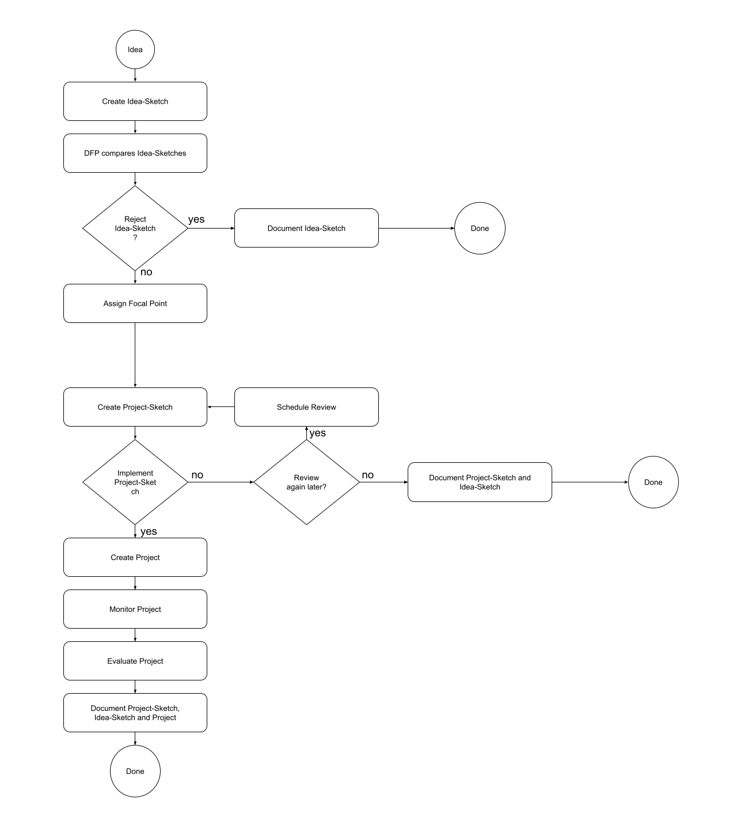

Idea Management Concept
Idea Management as Flow Chart

Effort vs Impact
The essence of idea management is to minimize effort while maximazing positive impact or upside for the organization by collecting, evaluating and implementing new ideas.
Any Idea which comes up in an organization has an unknown upside which makes it difficult to allocate time and money to investigate the potential upside or even implement the idea as a project. Regardless, any idea should be further evaluted to make sure that a significant upside is not lost for the organization.
Implementing a project requires a lot of effort and therefore the upside and costs of an idea as project should be very clear.
This is where (project) Sketches come in as a stage which requires only a little effort but gives a good enough estimate of the costs and upside of a possible project based on the initial idea.
With this degree of certainty and in comparison to other project sketches, an organization can prioritize, schedule and implement Projects.
With the project advancing, changes to costs and upside can be tracked and used to not only re-evaluate prioritization but especially to improve the skill of a team or organization to collect ideas at scale, derive a strategy from project sketches and efficiently implement projects - this empowers the team or organization to own their own innovation and (digital) transformation.